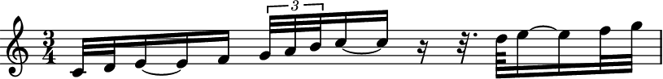
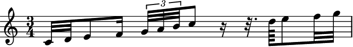
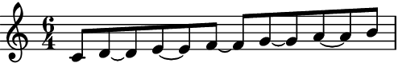
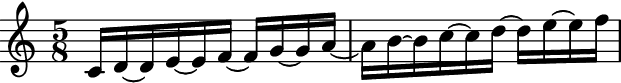
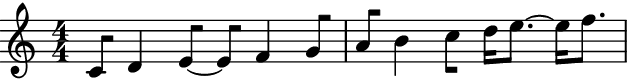
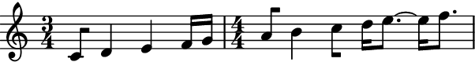
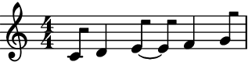
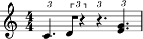
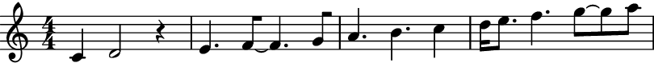
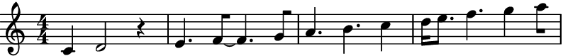

prettify_rewrite_meter¶
- auxjad.mutate.prettify_rewrite_meter(selection: abjad.select.Selection, meter: Union[abjad.meter.Meter, abjad.indicators.TimeSignature.TimeSignature], *, fuse_across_groups_of_beats: bool = True, fuse_quadruple_meter: bool = True, fuse_triple_meter: bool = True, extract_trivial_tuplets: bool = True, split_quadruple_meter: bool = True) → None[source]¶
Mutates an input
abjad.Selectionin place and has no return value; this function fuses pitched leaves according to the rules shown below, improving the default output ofabjad.Meter.rewrite_meter().- Basic usage:
Meters whose denominators are a crotchet or longer get tied notes within a beat after
abjad.Meter.rewrite_meter()when they are at an offsetdenominator / 4, so a rhythm such asdenominator / 4denominator / 2denominator / 4becomesdenominator / 4denominator / 4~denominator / 4denominator / 4. This function looks for those specific cases and fuses them, generating an output which is often more readable.>>> staff = abjad.Staff( ... r"\time 3/4 c'16 d'8 e'16 f'16 g'16 a'8 b'8 c''16 d''16" ... ) >>> meter = abjad.Meter((3, 4)) >>> abjad.mutate.rewrite_meter(staff[:], meter) >>> abjad.show(staff)

>>> auxjad.mutate.prettify_rewrite_meter(staff[:], meter) >>> abjad.show(staff)

Note
Auxjad automatically adds this function as an extension function to
abjad.mutate. It can thus be used from eitherauxjad.mutateorabjad.mutatenamespaces. Therefore, the two lines below are equivalent:>>> auxjad.mutate.prettify_rewrite_meter(staff[:], meter) >>> abjad.mutate.prettify_rewrite_meter(staff[:], meter)
- Other examples:
The rhythm of the leaves just before and after the two leaves to be fused can be different than
denominator / 4, as the function searches for logical ties of specific length and offset, and its surroundings do not matter.>>> staff = abjad.Staff(r"\time 3/4 c'32 d'32 e'8 f'16 " ... r"\times 2/3 {g'32 a'32 b'32} c''8 " ... r"r16 r32. d''64 e''8 f''32 g''32" ... ) >>> meter = abjad.Meter((3, 4)) >>> abjad.mutate.rewrite_meter(staff[:], meter) >>> abjad.show(staff)
>>> auxjad.mutate.prettify_rewrite_meter(staff[:], meter) >>> abjad.show(staff)
fuse_across_groups_of_beats:By default, this function also fuses rhythms of type
denominator / 2denominator / 2~denominator / 2denominator / 2, becomingdenominator / 2denominatordenominator / 2. This is only applied when the meter’s structure has a depth of 2, which is the case for meters with numerators equal to or larger than5.>>> staff = abjad.Staff(r"\time 6/4 c'8 d'4 e'4 f'4 g'4 a'4 b'8") >>> meter = abjad.Meter((6, 4)) >>> abjad.mutate.rewrite_meter(staff[:], meter) >>> abjad.show(staff)
>>> auxjad.mutate.prettify_rewrite_meter(staff[:], meter) >>> abjad.show(staff)

to disable this behaviour, set the optional keyword argument
fuse_across_groups_of_beatstoFalse.>>> staff = abjad.Staff(r"\time 6/4 c'8 d'4 e'4 f'4 g'4 a'4 b'8") >>> meter = abjad.Meter((6, 4)) >>> abjad.mutate.rewrite_meter(staff[:], meter) >>> auxjad.mutate.prettify_rewrite_meter( ... staff[:], ... meter, ... fuse_across_groups_of_beats=False, ... ) >>> abjad.show(staff)

abjad.Meterwithincrease_monotonic=True:The fused notes will respect the beat structures of such meters, even when
increase_monotonicis set to the non-default valueTrue. Compare the outputs below.>>> staff = abjad.Staff(r"\time 7/4 c'8 d'4 e'4 f'4 g'4 a'4 b'4 c''8") >>> meter = abjad.Meter((7, 4)) >>> abjad.mutate.rewrite_meter(staff[:], meter) >>> auxjad.mutate.prettify_rewrite_meter(staff[:], meter) >>> abjad.show(staff)

>>> staff = abjad.Staff(r"\time 7/4 c'8 d'4 e'4 f'4 g'4 a'4 b'4 c''8") >>> meter = abjad.Meter((7, 4), increase_monotonic=True) >>> abjad.mutate.rewrite_meter(staff[:], meter) >>> auxjad.mutate.prettify_rewrite_meter(staff[:], meter) >>> abjad.show(staff)

- Multiple measures at once:
This function can take handle multiple measures at once, as long as they share the same meter.
>>> staff = abjad.Staff(r"\time 5/8 c'16 d'8 e'8 f'8 g'8 a'16 ~ " ... r"a'16 b'8 c''8 d''8 e''8 f''16" ... ) >>> meter = abjad.Meter((5, 8)) >>> for measure in abjad.select(staff[:]).group_by_measure(): ... abjad.mutate.rewrite_meter(staff[:], meter) >>> abjad.show(staff)
>>> auxjad.mutate.prettify_rewrite_meter(staff[:], meter) >>> abjad.show(staff)

- Multiple measures:
Similarly to
abjad.Meter.rewrite_meter(), this function accepts selections of multiple measures:>>> staff = abjad.Staff(r"\time 4/4 c'8 d'4 e'4 f'4 g'8 | " ... r"a'8 b'4 c''8 d''16 e''4 f''8.") >>> meter = abjad.Meter((4, 4)) >>> for measure in abjad.select(staff[:]).group_by_measure(): ... abjad.mutate.rewrite_meter(measure, meter) >>> abjad.show(staff)

>>> for measure in abjad.select(staff[:]).group_by_measure(): ... auxjad.mutate.prettify_rewrite_meter(measure, meter) >>> abjad.show(staff)
- Multiple measures with different meters:
If the measures have different meters, they can be passed on individually using
zip()as shown below.>>> staff = abjad.Staff(r"\time 3/4 c'8 d'4 e'4 f'16 g'16 | " ... r"\time 4/4 a'8 b'4 c''8 d''16 e''4 f''8.") >>> meters = [abjad.Meter((3, 4)), abjad.Meter((4, 4))] >>> for meter, measure in zip( ... meters, ... abjad.select(staff[:]).group_by_measure(), ... ): ... abjad.mutate.rewrite_meter(measure, meter) >>> abjad.show(staff)

>>> for meter, measure in zip( ... meters, ... abjad.select(staff[:]).group_by_measure(), ... ): ... auxjad.mutate.prettify_rewrite_meter(measure, meter) >>> abjad.show(staff)
fuse_quadruple_meter:This function also takes care of two special cases, namely quadruple and triple meters. By default, it will fuse leaves in quadruple meters across beats 1 and 2, and across beats 3 and 4 (as long as they fulfil the other requirements of duration and offset).
>>> staff = abjad.Staff(r"\time 4/4 c'8 d'4 e'4 f'4 g'8") >>> meter = abjad.Meter((4, 4)) >>> abjad.mutate.rewrite_meter(staff[:], meter) >>> auxjad.mutate.prettify_rewrite_meter(staff[:], meter) >>> abjad.show(staff)
Set
fuse_quadruple_metertoFalseto disable this behaviour.>>> staff = abjad.Staff(r"\time 4/4 c'8 d'4 e'4 f'4 g'8") >>> meter = abjad.Meter((4, 4)) >>> abjad.mutate.rewrite_meter(staff[:], meter) >>> auxjad.mutate.prettify_rewrite_meter( ... staff[:], ... meter, ... fuse_quadruple_meter=False, ... ) >>> abjad.show(staff)

fuse_triple_meter:In the case of triple meters, it will fuse leaves across any beat as long as the previously mentioned conditions of offset and duration are met.
>>> staff = abjad.Staff(r"\time 3/4 c'8 d'4 e'4 f'8") >>> meter = abjad.Meter((3, 4)) >>> abjad.mutate.rewrite_meter(staff[:], meter) >>> auxjad.mutate.prettify_rewrite_meter(staff[:], meter) >>> abjad.show(staff)

Similarly to the example before, set
fuse_triple_metertoFalseto disable this behaviour.>>> staff = abjad.Staff(r"\time 3/4 c'8 d'4 e'4 f'8") >>> meter = abjad.Meter((3, 4)) >>> abjad.mutate.rewrite_meter(staff[:], meter) >>> auxjad.mutate.prettify_rewrite_meter( ... staff[:], ... meter, ... fuse_triple_meter=False, ... ) >>> abjad.show(staff)

extract_trivial_tuplets:By default, this function extracts the contents of tuples that consist solely of rests, or solely of tied notes and chords.
>>> staff = abjad.Staff( ... r"\times 2/3 {c'4 ~ c'8} \times 2/3 {d'8 r4} " ... r"\times 2/3 {r8 r8 r8} \times 2/3 {<e' g'>8 ~ <e' g'>4}" ... ) >>> meter = abjad.Meter((4, 4)) >>> abjad.mutate.rewrite_meter(staff[:], meter) >>> abjad.mutate.prettify_rewrite_meter(staff[:], meter) >>> abjad.show(staff)

Set
extract_trivial_tupletstoFalseto disable this behaviour.>>> staff = abjad.Staff( ... r"\times 2/3 {c'4 ~ c'8} \times 2/3 {d'8 r4} " ... r"\times 2/3 {r8 r8 r8} \times 2/3 {<e' g'>8 ~ <e' g'>4}" ... ) >>> meter = abjad.Meter((4, 4)) >>> abjad.mutate.rewrite_meter(staff[:], meter) >>> abjad.mutate.prettify_rewrite_meter( ... staff[:] ... meter, ... extract_trivial_tuplets=False, ... ) >>> abjad.show(staff)
split_quadruple_meterWhen applying
abjad.Meter.rewrite_meter()to a selection with quadruple meter and without using a deeperboundary_depththan the default, the resulting notation will often have leaves crossing the third beat of the measure, as shown below.>>> staff = abjad.Staff( ... r"c'4 d'2 r4" ... r"e'4. f'2 g'8" ... r"a'4. b'4. c''4" ... r"d''16 e''8. f''4. g''4 a''8" ... ) >>> meter = abjad.Meter((4, 4)) >>> for measure in abjad.select(staff[:]).group_by_measure(): ... abjad.mutate.rewrite_meter(measure, meter) >>> abjad.show(staff)
This function tests those leaves against a series of rules, splitting them when the tests fails. In the case shown above, the first two bars are very easy to read rhythmically, but the third and fourth are less so. This is due to the dotted crotchet, which starts off a beat, crossing the third beat of the measure. This function will split these sort of leaves as shown below.
>>> abjad.mutate.prettify_rewrite_meter(staff[:], meter) >>> abjad.show(staff)
Set
split_quadruple_metertoFalseto disable this behaviour.>>> staff = abjad.Staff( ... r"c'4 d'2 r4" ... r"e'4. f'2 g'8" ... r"a'4. b'4. c''4" ... r"d''16 e''8. f''4. g''4 a''8" ... ) >>> meter = abjad.Meter((4, 4)) >>> for measure in abjad.select(staff[:]).group_by_measure(): ... abjad.mutate.rewrite_meter(measure, meter) >>> abjad.mutate.prettify_rewrite_meter( ... staff[:] ... meter, ... split_quadruple_meter=False, ... ) >>> abjad.show(staff)

Tip
Use
auxjad.auto_rewrite_meter()to automatically applyabjad.Meter.rewrite_meter()andauxjad.mutate.prettify_rewrite_meter()to a container with multiple time signatures.Warning
The input selection must be a contiguous logical voice. When dealing with a container with multiple subcontainers (e.g. a score containing multiple staves), the best approach is to cycle through these subcontainers, applying this function to them individually.